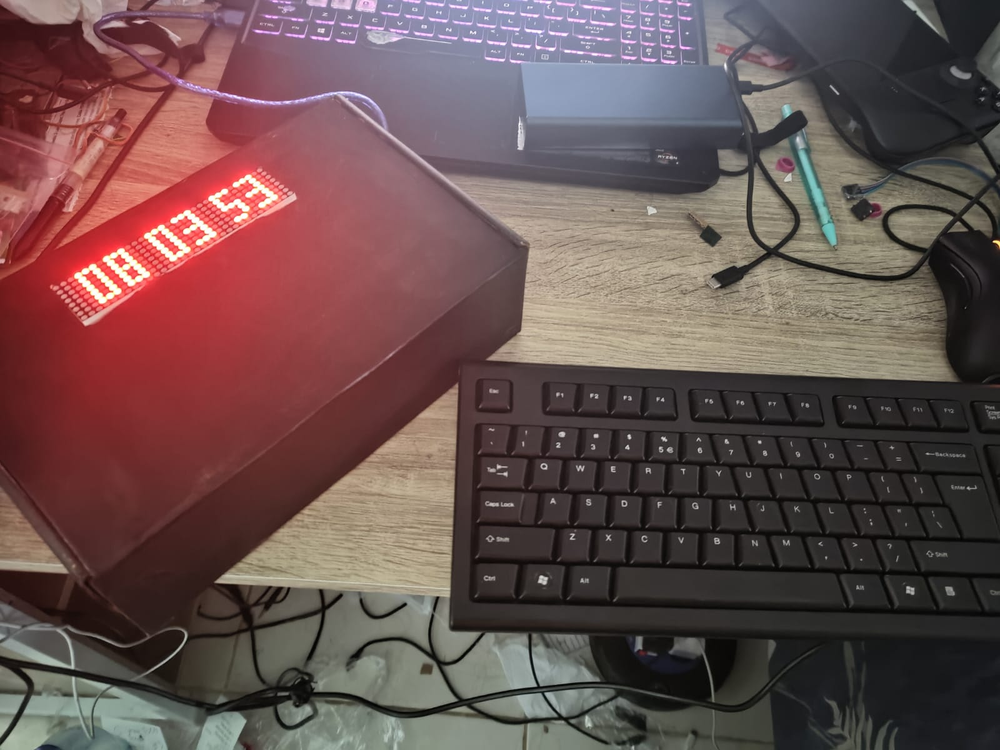
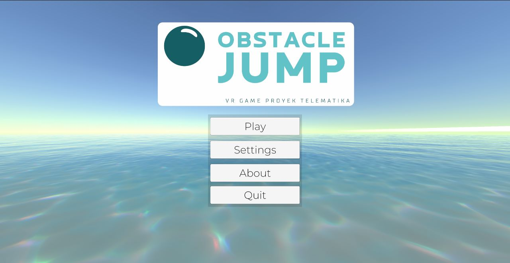
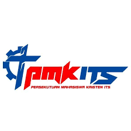

Introduction
Halaman website ini dibuat untuk mendokumentasikan dan menjelaskan singkat mengenai apa proyek yang telah
dikerjakan dan kepanitiaan yang telah diikuti oleh penulis website. Penulis website merupakan mahasiswa Teknik
Komputer angkatan 2020 di Institut Teknologi Sepuluh Nopember Surabaya.
Proyek
Jam Arduino

Jam Arduino merupakan jam yang dibuat menggunakan Arduino. Display jam ditampilkan menggunakan
Dot Matrix Display dan didalam jam terdapat sensor suhu lm35 dan RTC DS3231. Jam dapat diinputkan
menggunakan sebuah keyboard ps2. Jam dapat menunjukkan jam, tanggal, dan suhu. Tanggal dan jam dapat
di setting menggunakan keyboard. Proyek ini dibuat untuk tugas mata kuliah Sistem Tertanam.
Permainan VR dengan Pengalaman 4D, "Object Jump"

Proyek ini merupakan pembuatan game VR berjudul "Obstacle Jump" yang bergenre platformer dengan
perangkat yang dapat memberi pengalaman 4D. Objektif dari permainan ini adalah untuk menyentuh tombol
yang ada di akhir level. Jika pemain terjatuh kedalam kolam aur, maka perangkat 4D akan menyemburkan air,
jika pemain berjalan, maka perangkat 4D akan menyalakan motor rumble vibrator di kaki pemain dan jika pemain
menggunakan zipline maka dan pada perangkat 4D akan menyala. Proyek ini dibuat untuk tugas mata kuliah Proyek Telematika.
Kepanitiaan
MAGE 7 dan 8
MAGE atau Multimedia and Game Event merupakan salah satu event dari departmen Teknik Komputer ITS. Saat MAGE 7,
penulis menjadi panitia pada divisi humas dan saat MAGE 8, penulis menjadi wakil koordinator pada divisi humas.
PMK ITS - PKMBK 2021

PKMBK merapakan salah satu divisi dari dari PMK ITS atau Persekutuan Mahasiswa Kristen ITS. Penulis menjadi panitia pada divisi perlengkapan pada saat PKMBK 2021.